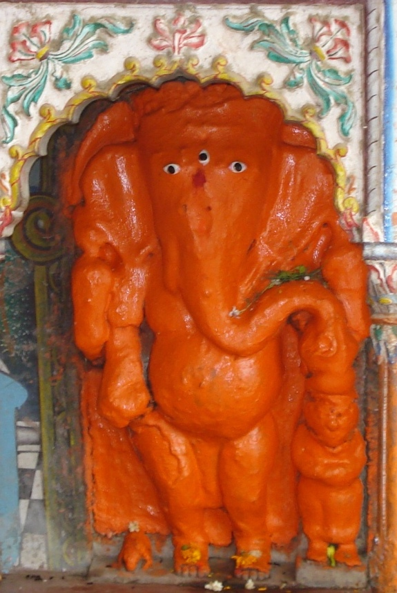

<?xml version="1.0" encoding="UTF-8"?><rss version="2.0"
	xmlns:content="http://purl.org/rss/1.0/modules/content/"
	xmlns:wfw="http://wellformedweb.org/CommentAPI/"
	xmlns:dc="http://purl.org/dc/elements/1.1/"
	xmlns:atom="http://www.w3.org/2005/Atom"
	xmlns:sy="http://purl.org/rss/1.0/modules/syndication/"
	xmlns:slash="http://purl.org/rss/1.0/modules/slash/"
	>

<channel>
	<title>Pichandil Vinayak &#8211; Varanasi Temples</title>
	<atom:link href="index.html" rel="self" type="application/rss+xml" />
	<link>../../../../index.html</link>
	<description>Temples of Varanasi as referred to in Kashi Khand</description>
	<lastBuildDate>Thu, 19 Jun 2025 05:16:46 +0000</lastBuildDate>
	<language>en-US</language>
	<sy:updatePeriod>hourly</sy:updatePeriod>
	<sy:updateFrequency>1</sy:updateFrequency>
	<generator>https://wordpress.org/?v=4.6.29</generator>
	<item>
		<title>PICHANDIL VINAYAK</title>
		<link>../../../../vinayak-temples/pichandil-vinayak/index.html</link>
		<pubDate>Fri, 07 May 2010 16:45:14 +0000</pubDate>
		<dc:creator><![CDATA[admin]]></dc:creator>
				<category><![CDATA[Pichandil Vinayak]]></category>
		<category><![CDATA[Vinayak Temples]]></category>
		<category><![CDATA[prahlad]]></category>

		<guid isPermaLink="false">../../../../p=113.html</guid>
		<description><![CDATA[(PICHANDIL VINAYAK) Pichandil Vinayak is located at A-10/80, below Vat Vriksh, Prahlad Ghat. Pichandil Vinayak guards Kashi day and night and blesses devotees with all success. Devotees can travel upto Prahlad Ghat Chauraha by rickshaw and walk on foot to this place. Alternatively they can take a boat ride and walk up the steps. TYPES [&#8230;]]]></description>
				<content:encoded><![CDATA[<p></p>
<p style="text-align: center;"><strong>(PICHANDIL VINAYAK)</strong></p>
<p>Pichandil Vinayak is located at A-10/80, below Vat Vriksh, Prahlad Ghat. Pichandil Vinayak guards Kashi day and night and blesses devotees with all success. Devotees can travel upto Prahlad Ghat Chauraha by rickshaw and walk on foot to this place. Alternatively they can take a boat ride and walk up the steps.</p>
<h3>TYPES OF POOJA</h3>
<p>The place of worship is open practically throughout and devotees can perform pooja by themselves.</p>
]]></content:encoded>
			</item>
	</channel>
</rss>
